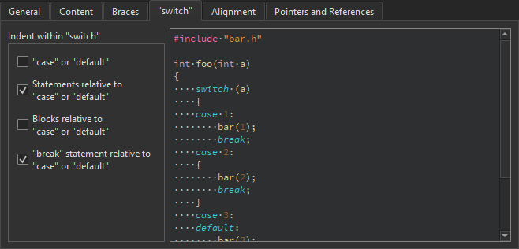
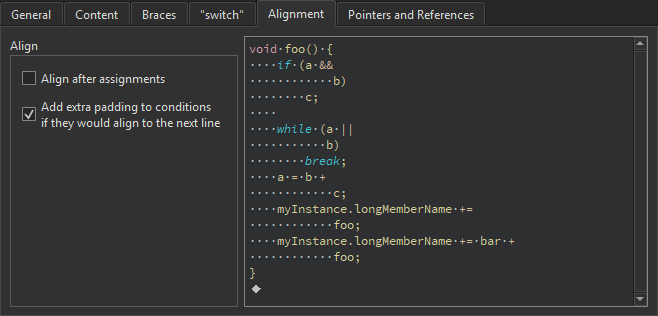

Indenting Text or Code
When you type text or code, it is indented automatically according to the selected text editor or code style options. Select a block to indent it when you press Tab. Press Shift+Tab to decrease the indentation. You can disable automatic indentation.
You can specify indentation for:
- C++ files
- QML files
- Nim files
- Other text files
You can also specify indentation separately for each project. You can specify several sets of code style settings and easily switch between them. In addition, you can import and export code style settings.
Indenting C++ Files
To specify indentation settings for the C++ editor:
- Select Tools > Options > C++.
- In the Current settings field, select the settings to modify and click Copy.

- Give a name to the settings and click OK.
- Click Edit to specify code style settings for the project.

You can specify how to:
- Interpret the Tab and Backspace key presses.
- Indent the contents of classes, functions, blocks, and namespaces.
- Indent braces in classes, namespaces, enums, functions, and blocks.
- Control switch statements and their contents.
- Align continuation lines.
- Bind pointers (*) and references (&) in types and declarations to identifiers, type names, or left or right
constorvolatilekeywords. - Name getter functions.
You can use the live preview to see how the options change the indentation.
To specify different settings for a particular project, select Projects > Code Style Settings.
Automatic Formatting and Indentation
The Clang Format plugin uses the LibFormat library for automatic formatting and indentation.
To enable the plugin, select Help > About Plugins > C++ > ClangFormat. Then restart Qt Creator to load the plugin.
Note: If you enable the plugin, do not use the Beautifier, because combining the two can provide unexpected results.
You can use Clang Format to enforce a coding style for a project or the whole organization. Create a .clang-format file that contains the Clang Format Style Options to use and save it in the root folder of the project or one of its parent folders. The plugin searches for the Clang format file recursively from the directory that contains the source file up to the file system root.
To specify settings for automatic formatting and indentation:
- Select Tools > Options > C++.

- Select the Format instead of indenting check box to use the Ctrl+I keyboard shortcut to format code instead of indenting it.
- Select the Format while typing check box to apply the formatting while you type code.
- Select the Format edited code on file save check box to apply the formatting to the edited code when you save the file.
- Select the Override Clang Format configuration file check box to create a local configuration file that overrides the one stored in the file system.
Note: This is not recommended, because it defeats the purpose of a Clang format file.
- To modify the values in the file, select them in the left-side column and enter the new values.
- To view examples of the new values in the right-hand column, select Apply.
To override the .clang-format file for a project, select Projects > Project Settings > Code Style > Override Clang Format configuration file.

You can create .clang-format files that contain the configuration options of a certain predefined style from the command line. For example, to create a format file for the LLVM style, enter the following command:
clang-format -style=llvm -dump-config > .clang-format
Indenting QML Files
To specify settings for the Qt Quick editor:
- Select Tools > Options > Qt Quick.
- In the Current settings field, select the settings to modify and click Copy.

- Give a name to the settings and click OK.
- Click Edit to specify code style settings for the project.

You can specify how to interpret the Tab key presses and how to align continuation lines.
To specify different settings for a particular project, select Projects > Code Style Settings.
Indenting Nim Files
To specify settings for the Nim editor (experimental):
- Select Tools > Options > Nim.
- In the Current settings field, select the settings to modify and click Copy.

- Give a name to the settings and click OK.
- Click Edit to specify code style settings for the project.

You can specify how to interpret the Tab key presses and how to align continuation lines.
To specify different settings for a particular project, select Projects > Code Style.
Indenting Other Text Files
To specify indentation settings for text files that do not contain C++ or QML code (such as Python code files), select Tools > Options > Text Editor > Behavior.

To specify different settings for a particular project, select Projects > Editor.
You can specify how to interpret the Tab and Backspace key presses and how to align continuation lines.
Specifying Tab Settings
You can specify tab settings at the following levels:
- For all C++ files
- For all QML files
- For all other text files
- For C++ files in a project
- For QML files in a project
- For other text files in a project
Specifying Tabs and Indentation
You can specify tab policy and tab size in the Tabs and Indentation group. In the Tab policy field, select whether to use only spaces or only tabs for indentation, or to use a mixture of them.
By default, the tab length in code editor is 8 spaces and the indent size is 4 spaces. You can specify the tab length and indent size separately for each project and for different types of files.
You can have continuation lines aligned with the previous line. In the Align continuation lines field, select Not at all to disable automatic alignment and indent continuation lines to the logical depth. To always use spaces for alignment, select With Spaces. To follow the Tab policy, select With Regular Indent.
Specifying Typing Options
When you type text or code, it is indented automatically according to the selected text editor or code style options. To specify typing options, select Tools > Options > Text Editor > Behavior > Typing.
To disable automatic indentation, deselect the Enable automatic indentation check box.
You can specify how the indentation is decreased when you press Backspace in the Backspace indentation field. To go back one space at a time, select None. To decrease indentation in leading white space by one level, select Follows Previous Indents. To move back one tab length if the character to the left of the cursor is a space, select Unindents.
You can specify whether the Tab key automatically indents text when you press it. To automatically indent text, select Always in the Tab key performs auto-indent field. To only indent text when the cursor is located within leading white space, select In Leading White Space.
Specifying Settings for Content
You can indent public, protected, and private statements and declarations related to them within classes.
You can also indent statements within functions and blocks and declarations within namespaces.

Specifying Settings for Braces
You can indent class, namespace, enum and function declarations and code blocks.

Specifying Settings for Switch Statements
You can indent case or default statements, or statements or blocks related to them within switch statements.

Specifying Alignment
To align continuation lines to tokens after assignments, such as = or +=, select the Align after assignments check box. You can specify additional settings for aligning continuation lines in the General tab.
You can also add spaces to conditional statements, so that they are not aligned with the following line. Usually, this only affects if statements.

Binding Pointers and References
To bind pointers (*) and references (&) in types and declarations to identifiers, type names, or left or right const or volatile keywords, select the check boxes in the Pointers and References tab.
The * and & characters are automatically bound to identifiers of pointers to functions and pointers to arrays.

Naming Getters
To prefer getter names without the string get, select the Prefer getter names without "get" check box in the Getter and Setter tab.